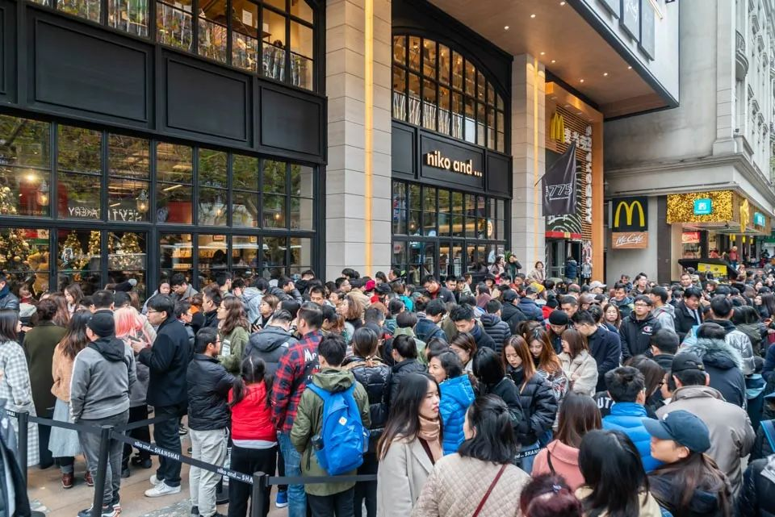
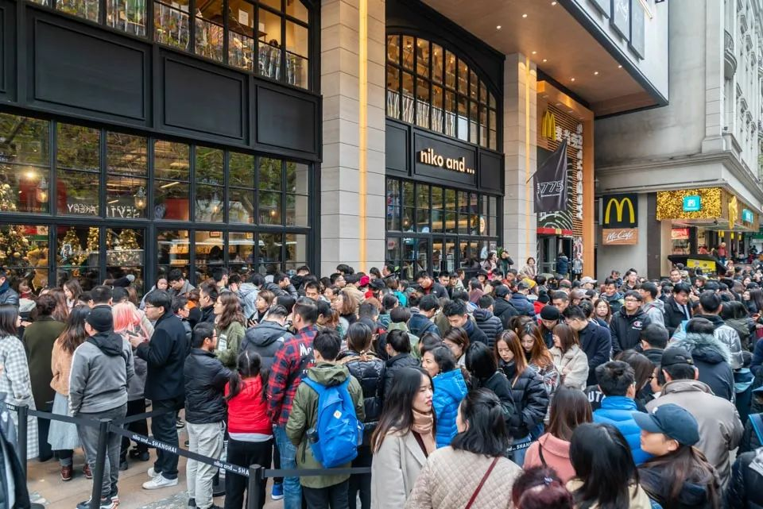

复工第一天： “花式办公”的员工，等待复苏的城市
原文链接 备份链接 *************▲*************广州街头，戴着口罩的行人。 （麦圈/图） 全文共2050字，阅读大约需要5分钟。 一场突如其来的疫情，给中国人带来近十年来最长的一个春节假期。随着2月10日的复 …
 ***************************************▲*************春节前，日本生活空间nikoand在上海开设全球最大旗舰店，开业当天，成百上千的消费者在淮海中路分批排队，预计等待时间超2小时。（IC Photo/图）
***************************************▲*************春节前，日本生活空间nikoand在上海开设全球最大旗舰店，开业当天，成百上千的消费者在淮海中路分批排队，预计等待时间超2小时。（IC Photo/图）
全文共4776字，阅读大约需要10分钟。
以产业链为纽带，各国企业共克时艰，这也是前所未有的事情。“要不是这次疫情，很多人不知道中国在全球产业链中到底有多重要。”
鸿海科技集团郑州工厂恢复产能的进度，很大程度上决定了苹果公司这一季度的营收，以及全球消费者拿到新款手机的时间。
“就在这短短3个月时间，智利一般要卖出10亿美金车厘子，其中90%都销往中国。”
本文首发于南方周末 未经授权 不得转载
文 | 南方周末记者 黄金萍
责任编辑 | 冯叶
作为全球第一大出口国与第二大进口国，中国正在全力遏制新冠肺炎病毒，多个省市临时决定顺延春节假期，将开工时间推到2月10日，有些甚至更晚。这令全球经济也跟着“打了一个喷嚏”。
不仅是中国的供应链卡了壳，中国人原本强劲的消费力也暂时消失了。
据美联社2020年2月9日报道，在意大利米兰的奢侈品购物区蒙特纳波隆，几十个奢侈品牌装饰了他们的橱窗，就为了迎接中国新年。但中国消费者没有如期而至。
全球约三分之一的奢侈品消费来自中国。在意大利，他们的消费超过了俄罗斯人、阿拉伯人和美国人的总和。
作为国际石油交易基准的布伦特(Brent)原油价格，从2020年1月初的每桶70美元跌至2月10日的55美元左右，部分原因是中国需求疲弱。中国是包括石油在内的许多大宗商品的全球最大进口国。
2月19日，据国务院联防联控机制新闻发布会，广东、江苏、上海等一些经济大省（市）规模以上的工业企业复工率超过50%。

2018年10月4日，土耳其伊斯坦布尔的一家奢侈品商店前，排着进店购物的中国游客。但2020年的春节，这些奢侈品店没有等来中国消费者。（IC Photo/图）
1
作为全球第二大进口国，中国是食品、电影票、汽车以及其它商品的主要买家。过去一段时间，这些商品不得不放缓进入中国的步伐。
徐鸿斌是北京一家中型规模进出口贸易公司的负责人，他的公司近些年开始从俄罗斯进口小麦、牛奶、蜂蜜、酸黄瓜等各色农产品。
“与世界上大多数产麦区不同，俄罗斯最好的小麦生长在北纬50度（大多数长在北纬40度），那里的土壤相当于东北的黑土地。”与南方周末记者谈起这些进口产品，徐鸿斌很是兴奋。
春节前，徐鸿斌就安排好了节后前往俄罗斯的行程。但受疫情影响，他不得不取消这些计划。几家俄罗斯供货商每天通过微信和邮件询问他，什么时候需求才能恢复。
徐鸿斌有些无奈，他暂时也没办法进口更多产品。一方面，春节前的存货还躺在中国的仓库里，因交通、物流没有完全恢复正常，无法发往全国各地的商超。
他刚去过一趟天津，因为要从天津港进口，他的仓库设在那里。他得知，天津港也面临 “爆仓”的局面，进口货物仍在源源不断地进来，但所有码头均堆满了集装箱却发不出去。天津港是京津冀及华北最大的港口。
中国食品土畜进出口商会2月10日发布消息称，接到交通部水运局公告，目前天津上海港口堆放冷藏箱运力已满，建议近期企业到港不要选择天津和上海，并贴出了其他可能尚有能力接受货物的港口。
好在部分物流恢复了，于是，徐鸿斌雇佣了一些高价的临时工，先通过电商给零售客户发货。“临时工一天要300元。”他说，过去只要一半价钱，而货车司机则更紧俏，再高的价格都难以找到。
这也是徐鸿斌为什么放弃进口的第二个原因。因为人力、物流等成本的上涨，商品价格自然水涨船高，所以消费者这段时间只会购买生活必需品，放弃一些原本价格就更高的进口商品。
这段时间，进口价格反而会下降，但徐鸿斌不敢冒险。比如俄罗斯牛奶，保质期6个月，从海上运到中国要45天，可一旦超过3个月，就没有超市愿意进货了。
“全球互通太频繁了，现在中国感冒了。”徐鸿斌对南方周末记者说，“其它国家都很难受。”
据《亚洲水果》杂志报道，智利政府与智利水果出口商协会近日发布评估数据，称目前智利水果出口的收入损失可能高达1亿美元。
其中，损失最大的就是车厘子。自春节假期结束中国批发市场重开以来的48小时内，市场上估计有1500货柜的樱桃，但仅有249个货柜售出。
夏非向南方周末记者解释，目前这个季节，南美和东南亚的水果正是销售旺季，因此受影响最大。尤其是车厘子，销售旺季是11月底开始到2月下旬。夏非曾是一家头部水果电商的采购总监。
“就在这短短3个月时间，智利一般要卖出10亿美金车厘子，其中90%都销往中国。”夏非说，“智利有太多人靠车厘子活着，包装工人、码头工人等等。”
车厘子滞销，是因为中国批发市场关闭了一段时间，以及交通受阻，没有办法抵达中国消费者手中。夏非说，过去这些车厘子一般从港口送往广州江南、上海辉展、嘉兴以及北京新发地这几大批发市场，但现在大多都积压在港口。
智利水果出口商协会主席 Ronald Bown表示，将继续向中国的医院和疗养部门捐赠新鲜水果。第一批已在上周完成，包括向上海的一家医院捐赠1000箱（1.5公斤/箱）蓝莓。
徐鸿斌说，国外供货商更着急，每天都在与他沟通。因为时差的原因，有时，他要线上办公至深夜11点。
不过，这些消费需求只是暂时的压抑。随着物流的恢复，生活渐渐步入正轨，“憋坏了”的中国消费者将会再次犒劳市场。

2019年1月27日，市民在贵州省黔南布依族苗族自治州龙里县贵州双龙水果批发市场选购车厘子。（IC Photo/图）
2
世界制造中心意外停摆，连锁反应很快传导给全球产业链。
紧邻中国的韩国、日本车企，率先感受到汽车产业链的环环相扣。
由于中国的延期复工，汽车线束供应商Kyungshin（京信）和Yura（裕罗）在中国生产的线束产品无法及时供应韩国，现代汽车在韩国的部分工厂从2月7日起不得不暂时停产。
日产汽车的日本九州工厂、雷诺汽车的韩国釜山工厂也先后宣布，由于中国区零部件供应中断，临时停产。
南方周末记者从京信公司内部人士处获知，京信和裕罗供应韩国的线束产品，主要由其设在山东省境内的工厂生产。目前，它们已经部分复产，正在赶工中。
疫情甚至还影响到了非洲。2020年2月2日，中国贸促会向浙江一家汽车零部件企业——汇大机械制造（湖州）有限公司，出具了第一份新冠肺炎不可抗力事实性证明书。受疫情影响，该公司无法按时履行此前签订的合同——每周向法国标致集团非洲工厂交付1000套转向机壳体。
南方周末记者从汇大机械制造（湖州）有限公司所在的河西社区了解到，该公司已于2月12日开始复工，但目前返岗率约为30%。但社区主任丁鑫泉告诉南方周末记者，从2月17日开始，借助支付宝健康码、加上轨迹查询，符合健康要求的外地员工无需居家隔离，体温正常就可以直接上岗了。
商务部对外贸易司、中国汽车技术研究中心有限公司编写的《中国汽车贸易高质量发展报告（2019）》提到，2018年中国汽车零部件出口额725亿美元，主要出口市场为美国、日本、德国等发达国家。主要汽车零部件企业正在加快融入全球供应链，在一些细分领域具备较强国际竞争力，并已进入跨国汽车企业OEM采购体系。
许多中国汽车零部件厂商均已出海投资，如中信戴卡这样全球最大的铝车轮和铝制底盘零部件供应商。自2008年以来，中信戴卡生产的汽车用铝车轮销量连续居全球第一，2018年卖出5401万只车轮。这意味着全球每7辆车就有一辆使用了中信戴卡的车轮。
其母公司中信股份（00267.HK）的2018财报显示，中信戴卡的车轮客户包括12家海外车企、6家中国车企。“当前客户对疫情影响非常敏感，我们根据实际情况与客户都一一做了承诺答复。”中信戴卡以母公司财报发布前的静默期为由，不愿透露更多关于复工和供应链信息。
产业链上下游相互传导，由于中国整车工厂延期复工，丰田在日本本土的发动机工厂，也不得不暂停部分原本供应中国市场的生产线。
如果中国再不复工，全球消费者也将在电子消费品领域感受到中国工厂引发的蝴蝶效应。
受疫情影响，日本游戏机公司任天堂公司近日宣布其“Nintendo Switch”及其配套设备将推迟出货。
2月17日，苹果向SEC（美国证券交易委员会）提交文件称，受疫情影响，中国合作伙伴无法如预期在2月10日复工，iPhone全球供应将暂时受限，进而影响其2020年第一季度的营收。
复工，是鸿海科技集团近日被问询最多的问题。2020年2月8日、10日，鸿海科技集团连发两则声明，表示不会针对单一厂区、客户、产品发表评论，其在大陆各厂区正在分批复工之中。
鸿海科技集团郑州工厂是iPhone主要组装基地。郑州工厂恢复产能的进度，很大程度上决定了苹果公司这一季度的营收，以及全球消费者拿到新款手机的时间。
为了早日复工，鸿海科技集团旗下的工业富联（601138.SH）甚至启动了口罩生产。口罩是复工的重要防疫物资之一，鸿海科技集团近百万员工，口罩需求量巨大。为此，他们在深圳龙华园区导入生产线，2月5日开始试产口罩，预计2月底可以实现日产200万只，用于员工内部生产防疫保障，未来视情况还可对外支援输出。
关于复产更多细节，工业富联对南方周末记者表示，特殊时期，不便接受采访。
2017年1月8日，意大利佛罗伦萨奢侈品打折村THE MALL进入打折季，中国游客及留学生成为“村子”的消费主力之一。受疫情影响，2020年的中国游客大幅减少。（IC Photo/图）
3
疫情也让印度制药企业感到紧张，担心原料药库存不足。
据金融时报近日报道，印度一家大型制药集团的负责人警告说，印度各制药商可能面临严重的生产停顿。印度是全球最大的仿制药出口国，其70%的原材料依赖中国。
中国是世界上最大的原料药生产和出口国，在维生素类、解热镇痛类、抗生素类以及皮质激素类产品颇具竞争优势。
中国医药保健品进出口商会的数据显示，2018年，中国原料药产品出口额930万吨、出口金额300.48亿美元。2019年上半年，原料药出口额172.47亿美元，同比增长6.64%。
石药集团（01093.HK）是中国原料药最大的出口企业之一。该公司公共关系负责人告诉南方周末记者，疫情发生后，石药集团也收到海外客户对原料药安全、供货情况的关切。因该集团在国际原料药供应商的头部地位，且客户多为多年积累的优质长单客户，备货充足，目前订单销售未受影响。
作为抗疫重点药品生产企业，春节期间，石药集团生产的抗疫药品盐酸阿比多尔片等生产线一直在持续生产。其他产线目前也已全面复工，大部分产品已基本恢复正常产能。
石药集团的情况并非特例，不少医药企业在疫情期间承担了抗疫药物保障功能，很快复产。2020年2月14日，另一家主要的原料药出口商普洛药业（000739.SZ）也公告称，公司复工率接近90%。
中国是药品原材料的最大出口国，也是全球最重要的原材料消费国。
自病毒出现以来，铜、铁矿石、镍、铝和液态天然气等关键工业原材料的价格大幅下跌。巴西、南非和澳大利亚等以高汇率出口这些商品的国家，其货币汇率已接近近年来的最低水平。
2020年2月18日，铁矿石巨头必和必拓(BHP.US)公布了截至2019年12月31日的半年财报，受中国需求和铁矿石价格高企所支撑，必和必拓上半年营收222.9亿美元，净利润49亿美元。
财报发布同一天，必和必拓市场分析和经济事务副总裁Huw McKay发布《经济和商品展望（2020）》，认为疫情将对大宗商品需求和价格构成风险，如果疫情在本季度“没有得到明显控制”，他们将下调对经济和商品需求增长的预期。
4
从事外贸工作十多年，KEDO在2020年第一次代理口罩进口清关。
此前，他经手的口罩业务都是出口。中国是全球最大的口罩生产国，偶尔有防毒面罩的进口。但这次疫情让中国口罩需求激增，转而成为进口大国。
2020年2月的第一周里，KEDO清关了八十多万个一次性医用口罩。它们分属约10家企业，一些是中国企业请外国客户帮忙采购，也有一些是外国客户主动代购、赠予中国供应商，用来保障生产。
以产业链为纽带，各国企业共克时艰，这也是前所未有的事情。一家位于深圳宝安的电子产品企业主向他感叹，外国客户比自己还要着急开工。
一些企业对产业链转移产生担忧。
KEDO不这么认为，服装、鞋子等能转移的都已经转移到东南亚了，留下来的中国制造大多是很有特点、不可替代的。他对南方周末记者说，“性价比太高，在海外根本找不到类似的供应商。”
“要不是这次疫情，很多人不知道中国在全球产业链中到底有多重要。”云南一家山葵种植企业的市场负责人高婷对南方周末记者说。
高婷的公司将山葵加工后，卖给美国一家保健品公司。疫情暴发后，由于交通运输受阻，他们无法正常发货，主动与美国客户协商。一开始对方有些犹豫，但仍然很理性，在查阅了新冠肺炎传播途径之后，在产品包装、消毒等方面给出建议，并没有暂停合同。
（应受访者要求，徐鸿斌为化名）


原文链接 备份链接 *************▲*************广州街头，戴着口罩的行人。 （麦圈/图） 全文共2050字，阅读大约需要5分钟。 一场突如其来的疫情，给中国人带来近十年来最长的一个春节假期。随着2月10日的复 …
原文链接 [备份链接]() *************▲*************2020年2月18日，呼和浩特一家公司的员工正在赶制口罩。 （新华社/图） 全文共5770字，阅读大约需要8分钟。 虽然是在生产口罩，杨洋自己家里的口罩还 …
原文链接 备份链接 摘要：疫情以来，企业复工日期一再调整，何时能回到办公室成为人们最关心的事情之一。2月10日以来，人们陆续回到岗位，有的经历旅途波折，有人面临待业裁员。经过这个漫长的假期，人们有种恍若隔世的感觉。不管怎样，返岗上班或许是 …
原文链接 备份链接 牛津经济研究所估计，如果最坏情景出现，病毒演变为一场全球疫情，那么2020年全球经济将损失1.1万亿美元。面对如此多的不确定性，情景规划是投资者应对潜在形势的最佳方式——尤其是在目前市场基本乐观的情况下 *文 | 瑞什 …
原文链接 备份链接 *************▲ *************2月10日，在太行山深处的河北石家庄市井陉县北良都村，北良都小学一名学生在家中利用网络听课学习。 （新华社 张秀科/图） 全文共3875字，阅读大约需要8分钟。 …